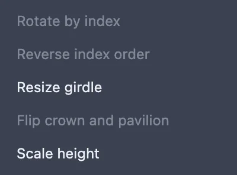
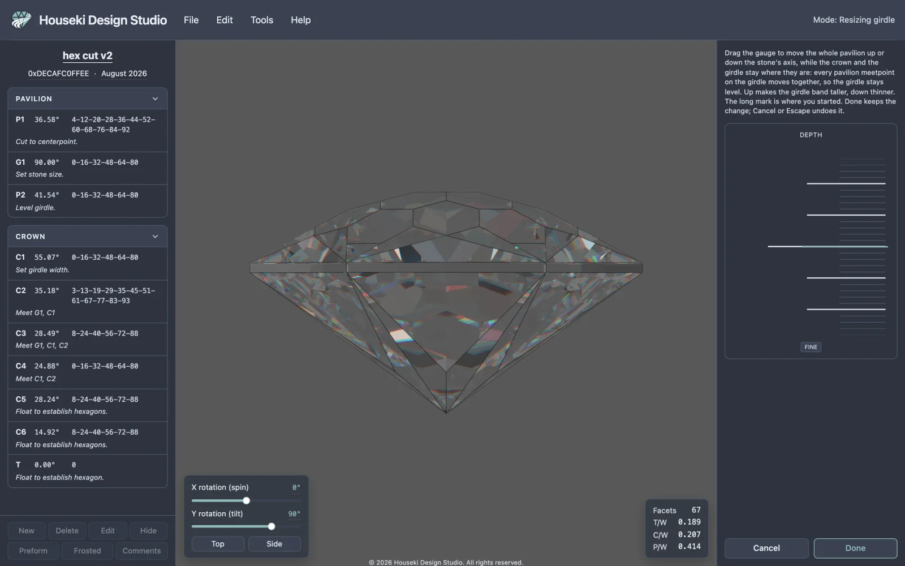
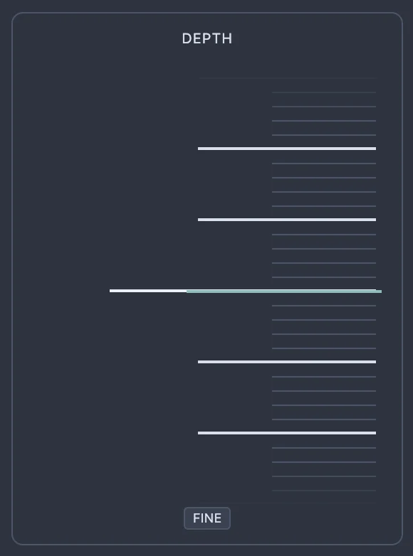
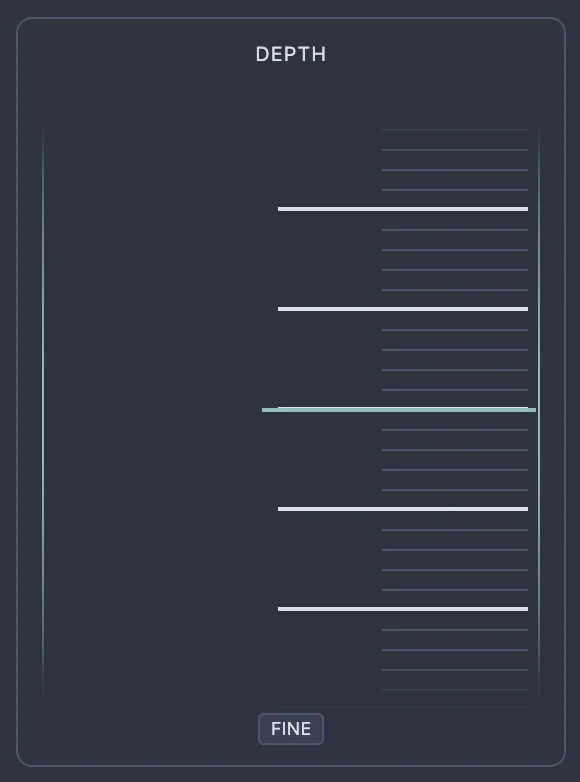
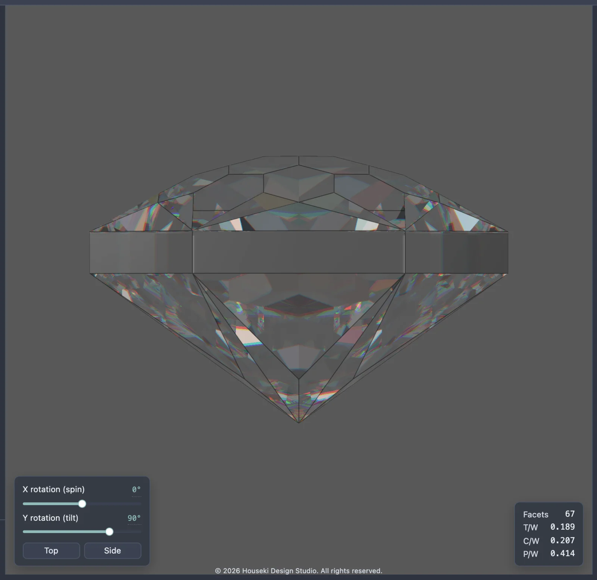
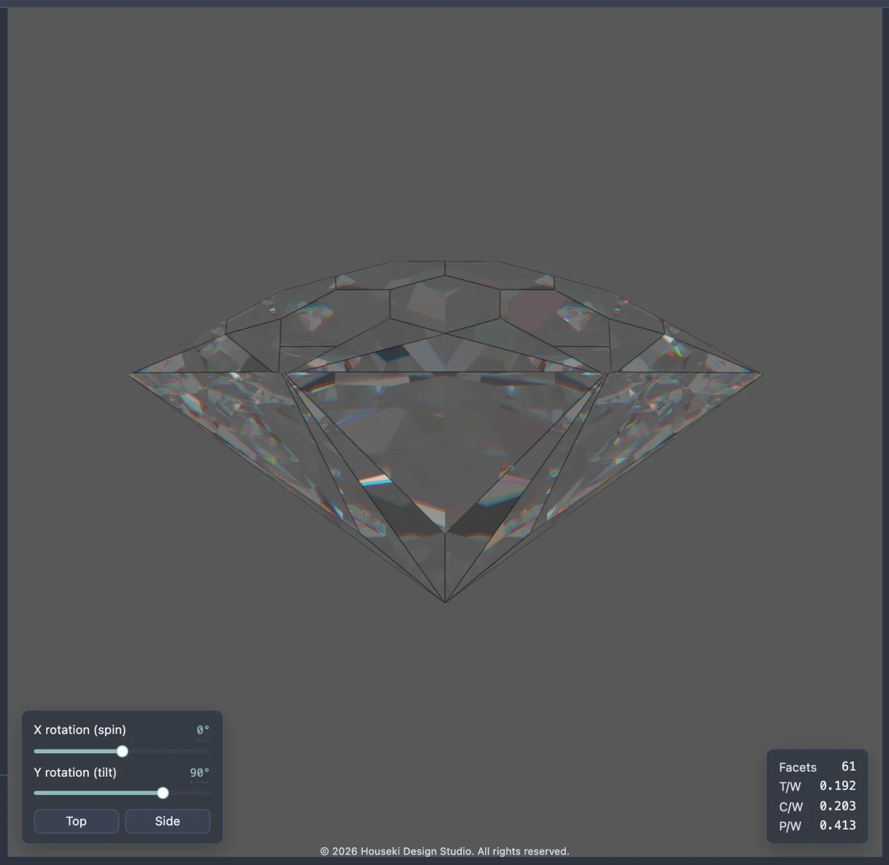
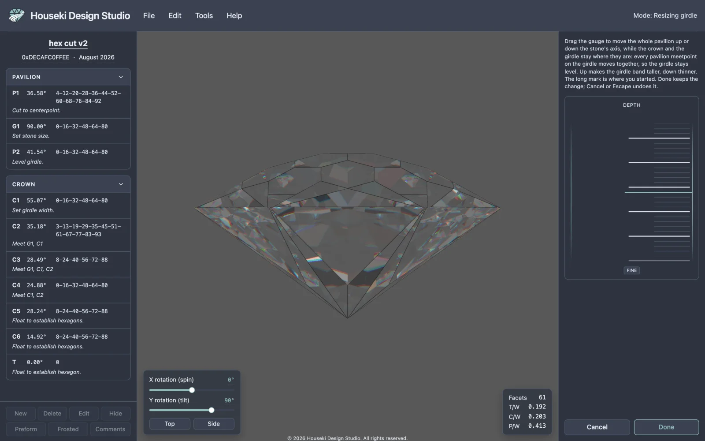

The girdle is the narrow band running around the widest part of the stone, where the crown above meets the pavilion below. Resize girdle mode makes that band thicker or thinner by moving the whole pavilion up or down along the stone's axis, without touching the crown, the table, or any facet's angle.
Choose Edit > Resize girdle from the menu bar. There is no keyboard shortcut for it. The item only opens the mode when a design is loaded and no other mode is already open (editing a tier, scaling height, or the cutting assistant); otherwise it is greyed out, and hovering it explains which one to finish first, such as "Finish scaling the height first: Done, or Cancel."

The top bar's status at the right reads Resizing girdle. The view turns to the stone's side profile automatically (the same view the Side button under the render gives you), so the girdle band is edge-on and easy to watch. The render settings panel is replaced by a small panel with one gauge, labelled Depth, and Cancel and Done buttons underneath. Nothing on the stone itself is draggable in this mode — the gauge is the only control.

The Depth gauge has no numbers on it at all — just evenly spaced ticks, a longer tick marking the depth you started from, and a Fine button underneath. Unlike some of the studio's other gauges, there is no box to click and type an exact value into; the tape itself, dragged, scrolled, or stepped with the keyboard, is the only way to set it.


Drag the gauge like a strip of paper: pulling it down makes the girdle band thicker (and the whole stone a little taller), pulling it up makes it thinner, until the girdle disappears completely and the crown's facets meet the pavilion's directly. Scrolling over the gauge or pressing the arrow keys works the other way around — scrolling or pressing ↑ thickens the girdle, scrolling the other way or pressing ↓ thins it. The gauge has to have keyboard focus first (click it, or drag it once) before the arrow keys do anything.
Hold Shift while dragging, or click Fine first, to move the gauge at a fifth of the usual speed for a more precise setting. Fine stays on until you click it again.



Only the pavilion's own facets move, and they all move together, by the same amount along the stone's axis, so wherever two pavilion facets used to meet the girdle at the same height, they still do — the girdle stays level. The crown, the table and the girdle's own facets never move, and no facet's angle changes anywhere in the design, however far you drag the gauge. Nothing about a tier's cutting index numbers changes either.
This is easy to miss on screen, because the studio's tier tables in the left-hand pane never show a cutting depth number to begin with (only a tier's id, angle and cutting indices), so resizing the girdle leaves that whole list looking exactly as it did. It is also easy to miss in the stone's proportions readout at the bottom right of the render: since the whole pavilion moves as one rigid piece, its own height above the culet does not change, so none of the Facets, T/W, C/W or P/W figures move either — except Facets, which drops once the girdle band has shrunk away to nothing. The only reliable way to see the change is to look at the render itself.
Click Done to keep the change and close the mode; it is filed as a single step in the studio's ordinary edit history, however many times you dragged the gauge back and forth first. Click Cancel, or press Escape, to put every tier back exactly as it was and close the mode without recording anything.
Opening the mode always turns the view to the stone's side profile, whatever you were looking at before. If you use the Top or Side buttons, or drag the stone to look at it from somewhere else, while the mode is open, both Done and Cancel put the view back to wherever it was pointing before you opened the mode — not to whichever view you last chose while resizing.
While the mode is open, Undo and Redo (the Edit menu items, and Ctrl+Z / Ctrl+Shift+Z, or Cmd+Z / Cmd+Shift+Z on a Mac) step back and forth through your own drags in this session, not through the studio's wider history. Once you click Done or Cancel and leave the mode, Undo and Redo go back to working on the whole design as usual — and if you kept the change, one more Undo takes back the whole resize in a single step.
| Action | How |
|---|---|
| Open the mode | Edit > Resize girdle |
| Thicken the girdle | Drag the gauge down; scroll up over it; or, with the gauge focused, press ↑ (a small step) or Page Up (a bigger jump) |
| Thin the girdle | Drag the gauge up; scroll down over it; or, with the gauge focused, press ↓ (a small step) or Page Down (a bigger jump) |
| Jump to the thickest setting | Home, with the gauge focused |
| Jump to the thinnest setting (girdle gone) | End, with the gauge focused |
| Fine adjustment (a fifth of the usual speed) | Click Fine first, or hold Shift while dragging |
| Undo / redo this session's drags | Ctrl+Z / Ctrl+Shift+Z (Cmd+Z / Cmd+Shift+Z on a Mac) |
| Keep the change and leave | Done |
| Discard the change and leave | Cancel, or Escape |
Resize girdle only moves the pavilion's own facets. To change a single tier's own angle or depth by hand instead, see Editing facets by tier. To make the whole stone taller or flatter while every facet keeps its shape, see Tangent ratio height scaling.